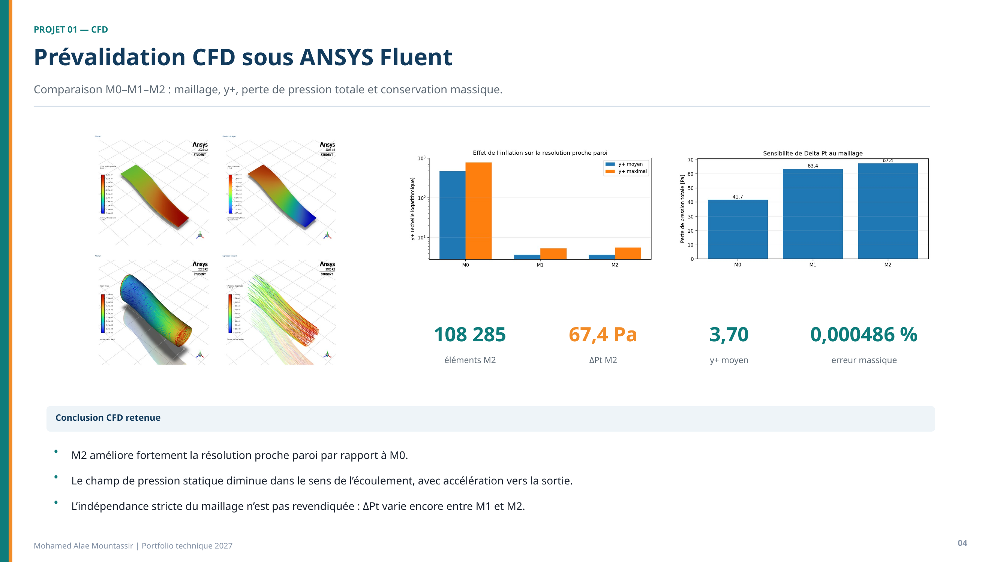
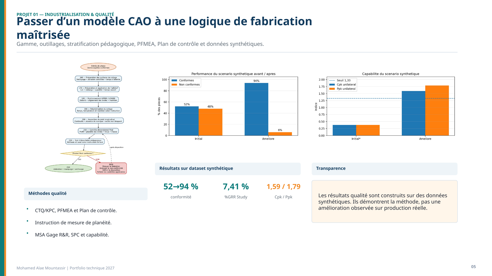

Projet personnel 01CATIA V5 · ANSYS Fluent · Industrialisation · Qualité
DAI-COMP-001 — Duct Air Inlet composite
Conception paramétrique d’un conduit de transition en deux demi-coquilles, préparation du domaine fluide et prévalidation CFD.
400 mmlongueur du conduit
2 mmépaisseur nominale
108 285éléments du maillage M2
67,434 Paperte de pression totale M2
- Surface intérieure fonctionnelle, épaisseur, brides, perçages et assemblage UPPER/LOWER sous CATIA V5.
- Comparaison des maillages M0-M1-M2 avec suivi du y+, de la perte de pression et de la conservation massique.
- M2 : y+ moyen 3,696 et erreur massique 0,000486 %.
Limite CFD : la variation de ΔPt entre M1 et M2 reste de 6,38 %. M2 est le meilleur compromis étudié, mais l’indépendance stricte du maillage n’est pas démontrée. Il n’existe pas de validation expérimentale.

Conception CATIA, résultats Fluent et sensibilité au maillage.
Complément industrialisation & qualité
Passer d’un modèle CAO à une logique de fabrication maîtrisée
Construction d’une gamme pédagogique, définition de points de contrôle et application de méthodes qualité sur un scénario synthétique.
52 → 94 %conformité du scénario synthétique
7,41 %%GRR Study
1,59 / 1,79Cpk / Ppk du scénario
CTQ / KPCPFMEA et plan de contrôle
- Gamme, outillages et stratification pédagogique.
- PFMEA, plan de contrôle et instruction de mesure de planéité.
- MSA Gage R&R, SPC et capabilité.
Transparence : les résultats qualité sont construits sur des données synthétiques. Ils démontrent l’application de la méthode, pas une amélioration mesurée sur une production réelle.

Gamme pédagogique, performance synthétique et capabilité.